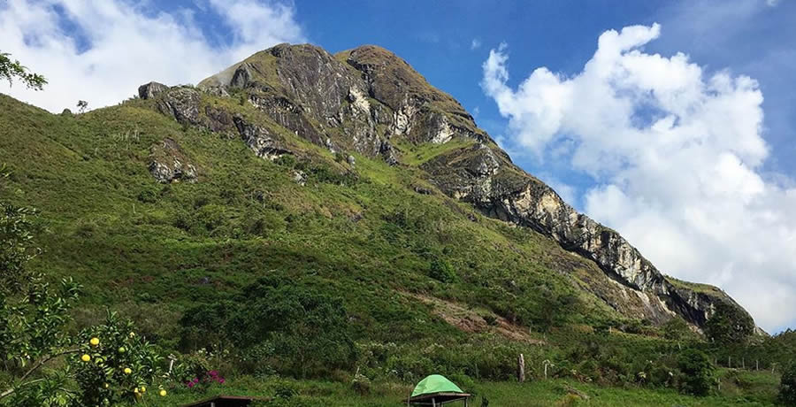

Cerro San Vicente
El Cerro San Vicente es una montaña piramidal y mirador natural ubicado a 15 kilómetros de la zona urbana de Abejorral, cerca a las veredas de San Jose, Portugal y la Peña, posee una excelente panorámica de gran parte del oriente y suroeste antioqueño, es el cerro más significativo de la población, a 2.500 metros sobre el nivel del mar, por su imponencia dentro del contexto natural. Lugar donde las prácticas guaqueras hacen parte del paisaje natural y en donde cuya cima los escaladores llegan para abrir sus brazos y echarse a volar en parapente.
